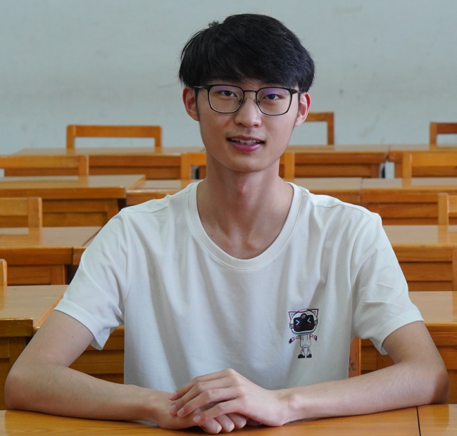
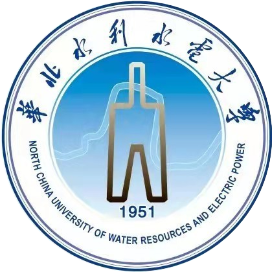
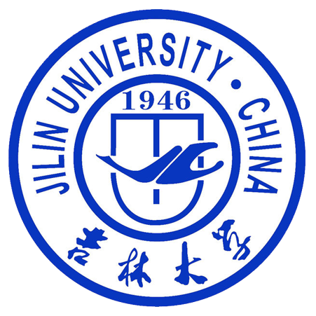

贾冕 Mian Jia
|
贾冕，男，1999年出生于河南省，中共党员。 目前是吉林大学软件学院软件工程专业的硕士研究生， 由王刚教授指导， 我们的研究组是吉林大学机器人研究组（JLUROBOT）🤖。 目前主要感兴趣的领域包括自动驾驶和即时定位与地图构建（Simultaneous Localization and Mapping，简称SLAM）等。 此前，我于2018年至2022年期间在华北水利水电大学信息工程学院获得了软件工程的学士学位， 指导老师为韩珂副教授， 并推免至吉林大学继续攻读硕士学位。 |

|
|
|
![[NEW]](images/new.png) 获得 2023 年度硕士研究生学业奖学金。😀
获得 2023 年度硕士研究生学业奖学金。😀
|
|
|
| 通过 CET-4 ，具备不错的英文文档阅读能力； | |
| 熟练使用 C++ ，熟悉面向对象知识与 RAII 思想，了解 STL 常用容器和适配器的底层实现原理，灵活使用 STL 与 C++ 新特性，如：泛型编程、右值引用、智能指针、可调用对象等； | |
| 多次参加 ACM 程序设计竞赛，熟练掌握二分、搜索、并查集、线段树、Trie 树、DP 等； | |
| 熟悉 Linux 环境下常用命令及相关工具的使用，掌握文件操作、进程管理与通信等； | |
| 熟悉 TCP/IP 四层模型，掌握 IP、TCP/UDP、HTTP 等常见的网络协议；掌握 Socket 编程、IO 多路复用接口 Select/Poll/Epoll 和 Reactor 网络模型； | |
| 熟悉线程、锁、信号量、条件变量、期望、异步并发、原子操作、线程池等； | |
| 了解单例、工厂、原型、代理、适配器、策略、模版方法、观察者等常用设计模式； | |
| 熟练使用 Vim、GCC、GDB、Git、Docker 等工具、能够使用 Makefile 或 CMake 编译大型项目； | |
| 熟悉 Python、PyTorch 以及一定的深度学习知识；熟悉 ROS 系统，熟悉 PCL、Eigen、Ceres、 OpenCV 等 SLAM 常用库；熟悉 LaTeX 与 Shell 脚本的书写； | |
| 熟练使用 Vim、GCC、GDB、Git 等工具、能够使用 Makefile 编译大型项目。 |
|
|
| 基于 Reactor 模型的多线程网络库 - 自学实践项目 | |
| 【项目描述】： 这是一个多线程 C++ 网络编程框架，专注于高性能网络应用开发。框架基于 epoll 事件驱动模型，结合非阻塞 I/O 和 LT (Level Triggered) 模式，实现了主从 Reactor 模型。 内部采用基于对象的编程风格和 One Loop Per Thread 的设计，利用回调函数和 I/O 多路复用 (epoll) 来高效处理任务和事件。 该框架设计简单易用，适合构建高效、可扩展的服务器端应用程序，特别是在高并发场景下表现优越。 | |
| 【主要技术】： C++、Linux、Epoll、Reactor、线程池、智能指针。 | |
| 【主要工作】： 底层实现了 Epoll + LT 模式的 I/O 复用模型，结合非阻塞 I/O 以构建主从 Reactor 模型。 使用线程池和 One Loop Per Thread 线程模型，提升系统的并发处理能力并减少性能开销。遵循 RAII 思想使用智能指针管理内存，减小内存泄露风险。 使用 eventfd 进行事件通知，以高效地将事件派发到其他线程进行异步处理，多个线程无需上锁就可以实现同步。 | |
| 【项目成果】： 使每个模块的工作更加专一，耦合度更低，性能和稳定性也大量的提升，支持的可并发客户端数量可达到上百万级别。 | |
| 【个人收获】： 对 Epoll 和 Reactor 模型有了较深的理解、掌握了基于事件驱动和事件回调的 Epoll+ 线程池的面向对象编程思想，能够利用该思想设计并实现更优秀的系统级产品。 | |
| 基于激光雷达的大规模森林场景位置识别 - 实验室科研项目 第一作者（目前论文在投） | |
| 【项目描述】： 现有的激光 SLAM 回环检测工作通常针对于城市、校园等结构化场景，而针对茂密丛林场景的效果较差，对此提出了一种两阶段的回环检测算法。 首先，提取出具有旋转平移不变性的局部三角形描述符，利用哈希表与投票机制来构建候选帧集合。 然后，利用树干分布信息设计出全局快照来增强回环帧的匹配过程，从而实现稳定且精确的位置识别。 | |
| 【主要技术】： ROS、PCL、Eigen、DBSCAN、KD-Tree、Hash。 | |
| 【主要工作】： 搭建 Argo 全地形车采集平台采集了一个越野路数据集 JORD ，并对其中的数据进行了清洗与格式转换； 复现近 5 年先进的回环检测算法，并集成进一个统一的框架中进行批量测试与实验； 设计并实现了针对茂密丛林场景的两阶段回环检测算法。 | |
| 【项目成果】： 在自主采集的越野路茂密丛林场景数据集中，所设计的回环检测算法与其他先进的描述符相比，在 EP 值和最大 F1 分数上至少能提升 8% 左右的精度。 | |
| 【个人收获】： 对位置识别有了较深入的理解，能够独立设计并实现具备旋转平移不变性的描述符来进行回环检测和重定位，并将其嵌入到 SLAM 系统中。 | |
| 基于卷积神经网络的智能疫情防控系统 - 河南省级大学生创新训练项目 项目负责人 | |
| 【项目描述】： 将采集到视频输入，利用 OpenCV 和 YOLO 进行行人检测和社交距离计算，对社交距离过近的用户进行标注，并对当前场景内违反社交距离的人数进行统计，进而可对当前场景进行疫情风险评估。 之后根据目标人员的体态、衣着等特征，对其进行跨摄像头的连续追踪，帮助有关部门锁定目标人员活动轨迹，缩小排查范围，降低防疫难度。 | |
| 【主要技术】： Python、PyTorch、PyQT、MySQL、OpenCV、YOLO、CNN、ReID。 | |
| 【主要工作】： 负责基于行人重识别的目标跨镜追踪板块的设计与实现。设计并实现了具有行人目标图片匹配和行人目标跨镜追踪两大核心功能，的跨摄像头行人目标追踪系统。 | |
| 【项目成果】： 作品参加相关竞赛共获得省级奖项 2 项，校级奖项 3 项。以“良好”结项。 | |
| 【个人收获】： 对深度学习的相关概念、行人重识别 ReID 的技术及系统流程有了较深的了解，能够利用该技术设计并实现系统级产品。 |
|
|
| 奖学金及荣誉称号： |
| 吉林大学 2023 年度硕士研究生学业奖学金 | |
| 吉林大学 2022 年度硕士研究生学业奖学金 | |
| 华水自强奖学金、优秀毕业生一等奖学金 (Top 3%)、2022 届华北水利水电大学优秀应届毕业生、华北水利水电大学校优秀毕业设计 | |
| 三好学生、优秀团员、优秀团干部、杰出校友奖学金、一等优秀学生奖学金 (Top 3%)、一等学业奖学金 (Top 3%) | |
| 三好学生、优秀团员、优秀团干部、国家励志奖学金 | |
| 三好学生、一等优秀学生奖学金 (Top 3%)、一等学业奖学金 (Top 3%) |
| 竞赛获奖： |
|
|
|  |  |
| 华北水利水电大学 NCWU 2018 - 2022 |
吉林大学 JLU 2022 - 至今 |
Template credits: Jon Barron, Unnat Jain, and Chenxu Hu |